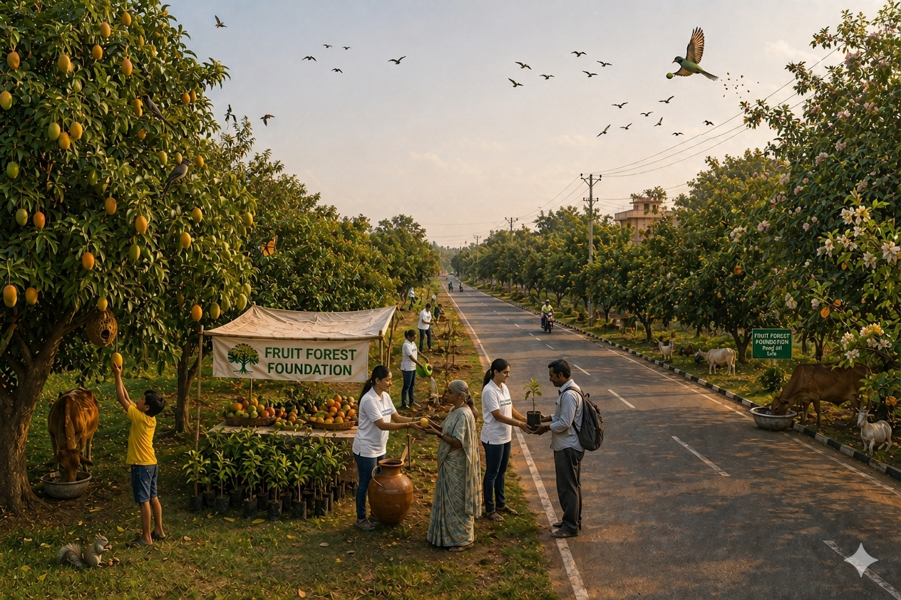
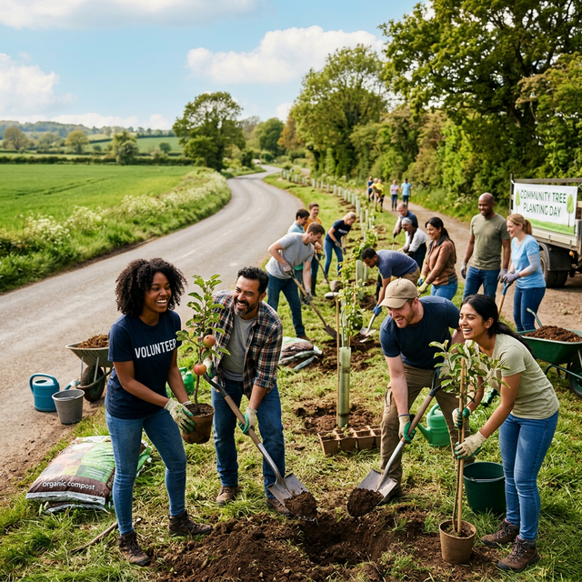
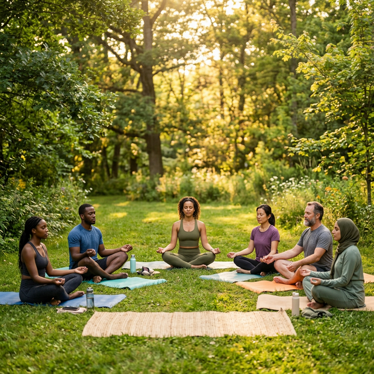
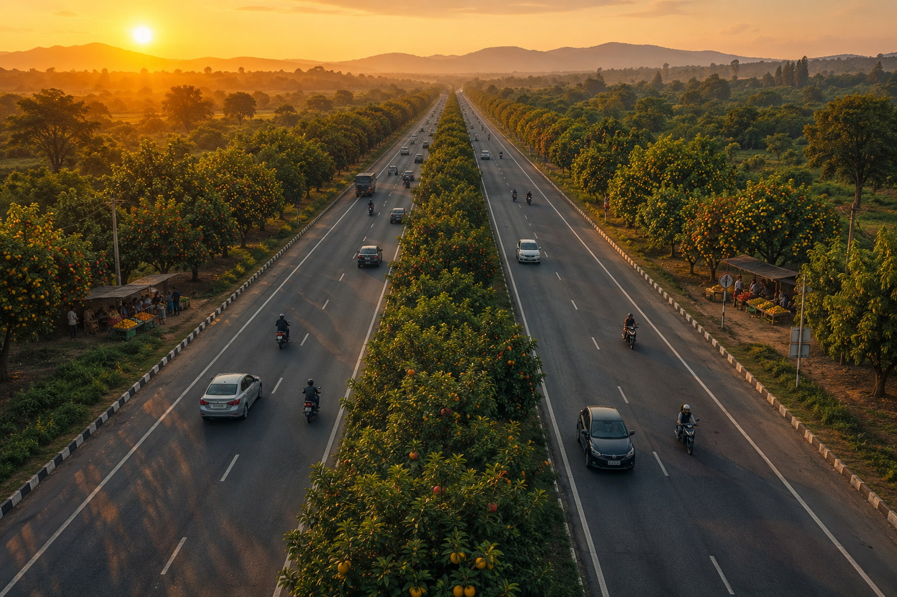

In Action
Moments of Impact
Real stories, real change — captured from our communities worldwide.





Plant one native fruit tree in every backyard and public space today.
One tree can feed people, bees, birds, and animals — a simple act of love that reaches far beyond humanity.
As birds, animals, rivers, and soil carry its seeds across the land, one tree becomes thousands, creating a living chain of food, biodiversity, shade, and hope that can heal the Earth for generations to come.
You can make an impact not only by planting a tree, but even by sharing this idea with your friends, family, and community — because every shared thought can grow into a forest.
Planting fruit trees is more than an environmental act—it’s a step toward restoring balance between people, nature, and the future.
At Fruit Forest Foundation, we plant fruit-bearing trees to reduce hunger, rebuild ecosystems, and create sustainable access to fresh food. Each tree supports communities, nourishes wildlife, and helps cool and clean our environment.
Beyond trees, we empower individuals through wealth education and wellness, building stronger, more aware communities.

Forests are disappearing, breaking ecosystems and accelerating climate imbalance.
Cities are becoming hotter and more polluted due to the loss of tree cover.
Fresh, nutritious food is becoming harder to access for many communities.
Vanishing greenery is leaving wildlife without food or shelter.
We restore balance by planting fruit-bearing trees—addressing climate, food, and ecosystem challenges through one simple, scalable action.
We convert open and unused spaces into fruit-rich green zones for everyone.
Our trees provide food and shelter for birds, animals, and pollinators.
We ensure free access to fresh fruits in public spaces for communities in need.
Our plantations reduce heat, improve air quality, and create healthier surroundings.
We enable a self-sustaining cycle where seeds spread naturally, growing more trees over time.
Why this works: Simple, scalable, and nature-driven solution to multiple global problems.
Explore where our trees are growing and changing lives around the world.
Restoring the bond between nature and community.
Fresh, seasonal nutrition should not be a privilege. Fruit trees in public spaces ensure anyone can access healthy food freely, while building stronger, more connected communities.
Cities often disconnect animals from their environment — fruit trees reconnect them. They create natural food sources for birds and pollinators, safe nesting habitats, and restored biodiversity in urban environments.
Each tree is a long-term climate investment. Our plantations reduce urban heat, improve air quality, absorb carbon dioxide, and restore ecological balance in modern cities.
How we execute our mission to restore nature and nourish communities.
Educating communities about environmental issues and the importance of tree planting through targeted campaigns and local workshops.
Mobilizing hands-on community action through organized planting events that bring people together for a common purpose.
Strategic allocation of resources to secure public lands and provide the necessary infrastructure for sustainable forest growth.
Collaborating with local expert nurseries to ensure only high-quality, indigenous fruit saplings are used in our projects.
Creating a model where fruit trees are not just planted, but integrated into the community for free, long-term food security.
Ongoing care and stewardship of every planted sapling until it matures into a thriving, self-sustaining fruit-bearing tree.
Real stories, real change — captured from our communities worldwide.



At Fruit Forest Foundation, we believe that every fruit tree planted today becomes a source of food, health, shade, and hope for future generations. Our mission is to transform public spaces into living fruit forests while spreading awareness about the importance of nature, wellness, and sustainable living.
Help us plant fruit trees in schools, roadsides, villages, parks, public lands, and community spaces. Every contribution helps create greener environments and provides free, healthy fruits for people and wildlife.
You can support the distribution of fruit tree saplings to communities, families, educational institutions, and public organizations. Together, we can encourage people to grow food naturally and sustainably.
Awareness creates impact. Share our mission with your friends, family, schools, organizations, and communities. By spreading the idea of fruit forests, you help inspire more people to protect nature and plant for the future.
Become a volunteer and join our plantation drives, awareness campaigns, community programs, and educational activities. Your time and effort can directly create positive environmental and social change.
Along with environmental initiatives, we also focus on wellness and wealth coaching to help individuals build healthier lifestyles, positive habits, financial awareness, and personal growth. We believe true sustainability begins with healthy minds, healthy bodies, and empowered communities.
Every fruit tree:
Small actions today can create forests tomorrow.
Be a part of creating a world where public spaces are filled with fruit-bearing trees, communities are healthier, and people are inspired to live sustainably. Support, volunteer, share, and grow this movement with us.
Join our community efforts to grow fruit forests and support a greener future for everyone.
Work with us to expand fruit forests and create sustainable community impact worldwide.
Discover programs for wellness, sustainability, and education to empower individuals.
Common questions about our fruit tree initiatives and community programs.
We plant fruit-bearing trees suitable for the local environment.
Anyone. These trees are for public use.
You can join our planting drives and help maintain trees.
Through donations and partnerships.